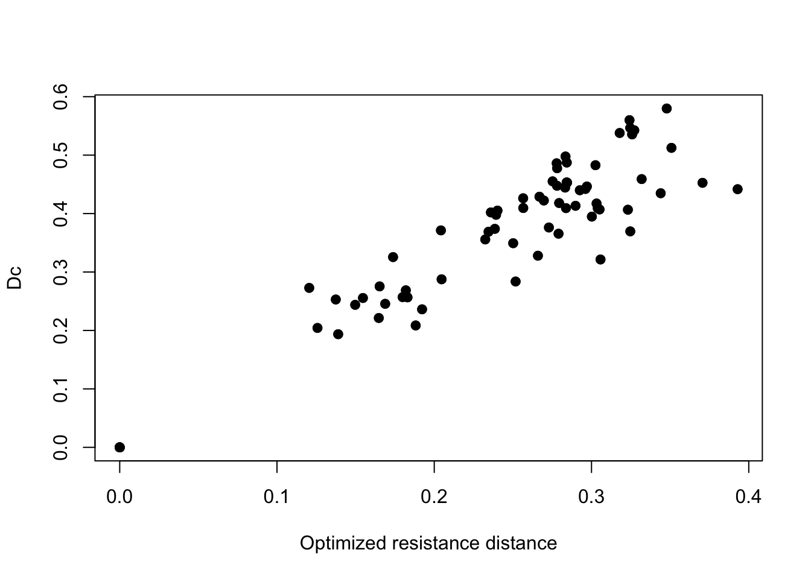
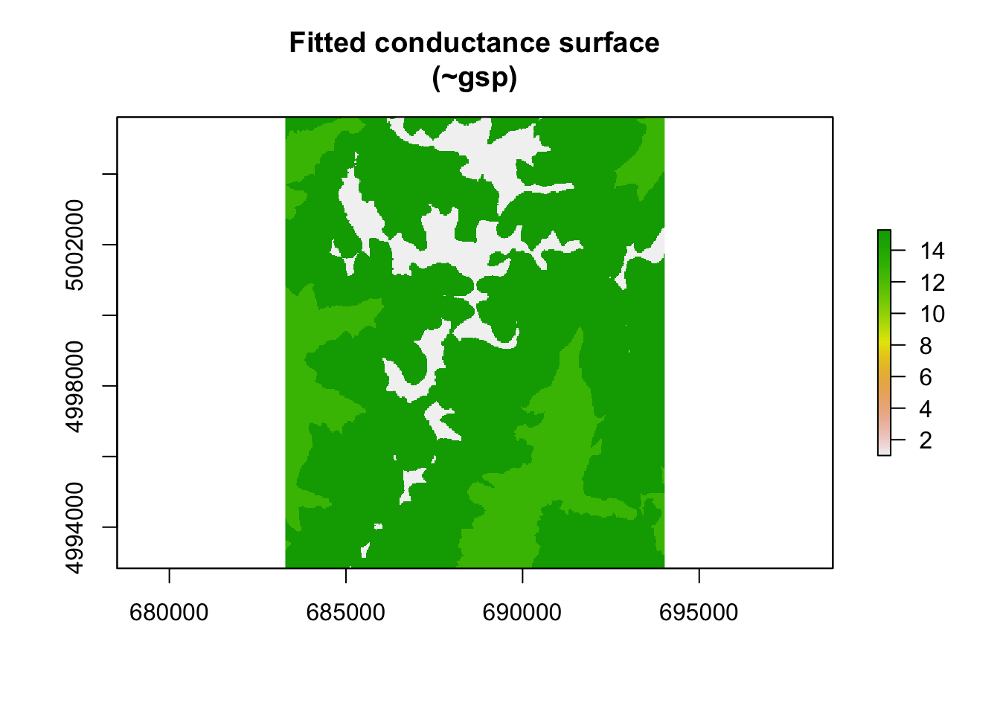

13.2 Bonus: ‘radish’ tutorial
Nate Pope and Bill Peterman
1. Overview of Bonus Materials
This short tutorial provides an overview of the in-development R package radish created by Nate Pope and Bill Peterman.
a. What is the package ‘radish’?
From the README file of the Github repository:
radish is an R package for maximum likelihood estimation of isolation-by-resistance models, where conductance is a function of spatial covariates, the observed data are genetic distances, and the likelihood of the “measurement process” is cheap to compute (e.g. regression of distance matrices, or generalized Wishart). It also provides fast computation of the gradient, Hessian matrix, and derivative-based leverage/influence measures. As currently implemented it is intended for moderate-sized problems (e.g. rasters with less than 1mil cells, where a sparse Cholesky decomposition of the graph Laplacian is feasible). Larger problems are possible (with sufficient memory), but slow.
Ultimately, radish provides a user-friendly interface for optimizing landscape resistance models. Using this framework, the effects and contributions of independent landscape surfaces are estimated. In landscape genetics, we are frequently interested in how spatial covariates (temperature, altitude, and so on) influence the movement of organisms. One way to approach this problem is to discretize the landscape as a raster, model movement as a random walk between raster cells, and write the rates of transition between cells as a parameterized function of spatial covariates. For example, the resistance models in this tutorial have the form,
log(conductance[cell]) = coef_1 * covariate_1[cell] + coef_2 * covariate_2[cell] + ...where conductance[cell] = 1/resistance[cell]. The parameters coef_i have a clear biological interpretation: if coef_i > 0, then the associated covariate facilitates movement; if coef_i < 0 then it impedes movement; and if coef_i = 0 then it has no effect on movement. “Isolation by distance” is the special case where coef_i = 0 for all i: in other words, the landscape has no impact on movement.
For a particular choice of values for coef, the “resistance distances” between cells on this raster can be calculated and compared to observed genetic distances via some sort of regression. This regression is referred to as a “measurement process” in the quote above, but maybe “error model” is a better term. The measurement/error model may involve any number of nuisance parameters (e.g. slope, intercept, and residual error), and provides a way to measure of goodness-of-fit between genetic and resistance distances (e.g. via the log-likelihood of the regression fit). radish optimizes the parameters of interest (e.g. coef) so as to maximize goodness-of-fit, while profiling out the nuisance parameters.
A visualization of this framework is shown in Figures 1 & 2. This is a depiction of parameter space for a landscape resistance model with two spatial covariates: the x-axis/y-axis are values of coef[1] and coef[2] in the equation above. At any given point in this space, resistance distance can be calculated and regressed with observed genetic distance (or a measure of divergence like Fst). Thus for the two sub-panels in Figure 1, the regressions use the same dependent variable (in this case Fst) but different resistance distances (corresponding to the values of coef at each point). The likelihood (goodness-of-fit) of the regressions over the entire parameter space creates a likelihood surface. The values of coef that maximize this likelihood surface are the maximum likelihood estimates (MLE) of the parameters. Reduced models follow from restricting one or both of coef to 0, effectively dropping the associated spatial covariates from the model. Rather than exhaustively searching parameter space for the MLE, radish uses an efficient optimization algorithm.

Figure 13.1: Points in parameter space for a loglinear conductance model with two spatial covariates. At each point, resistance distance can be calculated and regressed with genetic distance/divergence.

Figure 13.2: If the log-likelihood (goodness-of-fit) of the regression is measured across parameter space, this creates a likelihood surface. The parameter values at the maximum of the surface are the maximum likelihood estimates. Reduced models follow from restricting one or both parameters to 0.
If the “measurement process” accounts for the complex covariance structure of pairwise genetic distances, then standard likelihood-based approaches like AIC or likelihood ratio tests can be used for model selection (see Week 12). “Maximum likelihood population effects” (MLPE) regression (Clarke et al. 2003) provides a simple way to capture dependence between genetic distances that involve the same populations/spatial locations, and is used in this tutorial. However, there is some indication that MLPE overestimates the amount of information in the data (Peterman & Pope 2021), resulting in high rates of Type-I errors in the context of model selection with radish. In general, maximum likelihood-based model selection with MLPE and radish should be taken with a grain of salt. Non-parametric approaches like cross-validation and permutation tests are more robust, and work is ongoing to make a user-friendly interface for these. So for now, this package and framework should be viewed as a tool for resistance surface optimization only.
b. Data
This example uses the data from the GeNetIt package by Jeff Evans and Melanie Murphy that we’ve used already in the Week 2 and Week 10 Worked Examples. We will use spatial data from central Idaho for Columbia spotted frogs (Murphy et al. 2010). Raster and Sampling location text below is copied from Week 10.
Raster data: A raster is essentially a georeferenced matrix (i.e., a matrix with geographical co-ordinates). Here we’ll analyze raster data that are available in the GeNetIt packages in the form of a SpatialPixelsDataFrame called ‘rasters’ (for meta data, type: ?GeNetIt::rasters). These data include classified Landsat land-cover data (NLCD), spline-based climate predictions (Rehfeldt et al. 2006), and topographically derived variables (Moore et al. 1993, Evans 1972). Landscape variables were selected based on knowledge of species’ ecology and previous research (Murphy et al. 2010, Pilliod et al. 2002, Funk et al. 2005):
cti: Compound Topographic Index (“wetness”)err27: Elevation Relief Ratioffp: Frost Free Periodgsp: Growing Season Precipitationhli: Heat Load Indexnlcd: USGS Landcover (categorical map)
Sampling locations: We will model landscape resistance between the ponds from which Colombia spotted frogs were sampled. The spatial coordinates and site data are available in the GeNEtIt package in the form of a SpatialPointsDataFrame ralu.site. The slot @coords contains UTM coordinates (zone 11), and the slot @data contains 17 site variables for 31 sites. For meta data type: ?GeNetIt::ralu.site.
c. Required R packages
Both corMLPE and radish packages require compiling.
Note: If using a Windows machine, this requires Rtools. Thus, if you get error messages, install Rtools. Be sure to follow the necessary steps so that Rtools is in your system PATH
if(!requireNamespace("GeNetIt", quietly = TRUE)) remotes::install_github("jeffreyevans/GeNetIt")
if(!requireNamespace("corMLPE", quietly = TRUE)) remotes::install_github("nspope/corMLPE")
if(!requireNamespace("radish", quietly = TRUE)) remotes::install_github("nspope/radish")
library(radish)## Loading required package: Matrix## Loading required package: sp## terra 1.7.65## Linking to GEOS 3.11.0, GDAL 3.5.3, PROJ 9.1.0; sf_use_s2() is TRUE2. Import data
a. Import raster data
Load the raster data as a SpatRaster (package terra) with multiple layers. The names of the layers will be your independent variable(s) when fitting the radish model. We’ll make an object called covariates for use with radish.
c. Import genetic data
Using the raw genetic data (i.e. ralu.loci) from the LandGenCourse package, we created a genpop data object and then calculated Chord Distance using the adegenet package. Load this square distance matrix.
d. Selecting sites
Because the genetic data are a subset of the larger data set, we need to select the 12 sites (ponds) from the sites point object that match those included in our genetic distance matrix. We’ll then convert the SpatialPointsDataFrame to a SpatialPoints object and map our results to confirm everything lines up.
sites_select <- sites[c(1:3,5:6,8,11:12,21,23,25:26),]
## Must be a SpatialPoints object
sites_select <- sp::SpatialPoints(sf::as_Spatial(sites_select))
terra::plot(covariates[["hli"]])
points(sites_select, pch = 19)
3. Basic model fitting
a. Preparing ‘radish’ objects
To fit a radish model, we need to create a parameterized conductance surface. Before doing so, we are going to scale our covariates. This will (hopefully) reduce numeric overflow issues during optimization as well as make effect sizes of parameter estimates of the final model comparable.
scale_covs <- stack(scale(covariates)) ## Must be a raster stack
surface <- conductance_surface(covariates = scale_covs,
coords = sites_select,
directions = 8)We’re now ready to use radish to fit a measurement model and optimize landscape conductance values!
b. Fitting ‘radish’ models
radish currently supports the fitting a few different measurement models (?radish_measurement_model). We’ll first use the MLPE model (Clarke et al. 2002) with a loglinear link of the spatial data to conductance. Note: this is quite a few covariates to estimate with only 12 populations sampled!
fit_mlpe <- radish(ralu.dc ~ cti + err27 + ffp + hli,
data = surface,
conductance_model = radish::loglinear_conductance,
measurement_model = radish::mlpe)## Warning in assemble_model_matrix(formula, x): Removed unused spatial
## covariates: gsp nlcd## Projected Newton-Raphson with Hager-Zhang line search
## [1] f(x) = 1.551e+02 |f(x)-fold(x)| = 0.000e+00 max|f'(x)| = 2.921e+01 |f''(x)| = 2.244e+07
## [2] f(x) = 1.583e+02 |f(x)-fold(x)| = 3.190e+00 max|f'(x)| = 3.078e+01 |f''(x)| = 4.608e+06
## [3] f(x) = 1.614e+02 |f(x)-fold(x)| = 3.022e+00 max|f'(x)| = 4.309e+00 |f''(x)| = 4.752e+07
## [4] f(x) = 1.635e+02 |f(x)-fold(x)| = 2.125e+00 max|f'(x)| = 1.218e+01 |f''(x)| = -1.279e+06
## [5] f(x) = 1.639e+02 |f(x)-fold(x)| = 4.128e-01 max|f'(x)| = 8.961e-01 |f''(x)| = -2.238e+06
## [6] f(x) = 1.639e+02 |f(x)-fold(x)| = 3.142e-02 max|f'(x)| = 2.206e-01 |f''(x)| = -1.455e+06
## [7] f(x) = 1.639e+02 |f(x)-fold(x)| = 1.130e-04 max|f'(x)| = 1.971e-04 |f''(x)| = -1.464e+06
## [8] f(x) = 1.639e+02 |f(x)-fold(x)| = 5.885e-10 max|f'(x)| = 8.864e-10 |f''(x)| = -1.464e+06
## Solution on interior with `max(abs(gradient))` == 8.864018e-10 and `diff(f)` == 5.884715e-10Now lets look at the fitted model:
## Conductance surface with 152508 vertices (12 focal) estimated by maximum likelihood
## Call: radish(formula = ralu.dc ~ cti + err27 + ffp + hli, data = surface,
## conductance_model = radish::loglinear_conductance, measurement_model = radish::mlpe)
##
## Loglikelihood: 163.9248 (8 degrees freedom)
## AIC: -311.8495
##
## Number of function calls: 28
## Number of Newton-Raphson steps: 8
## Norm of gradient at MLE: 1.072115e-09
##
## Nuisance parameters:
## alpha beta tau rho
## 0.0267 1.3956 5.8721 -1.1409
##
## Coefficients:
## Estimate Std. Error z value Pr(>|z|)
## cti 0.5015 0.2418 2.074 0.0381 *
## err27 0.3411 0.1332 2.561 0.0104 *
## ffp 0.0416 0.1465 0.284 0.7765
## hli -1.0959 0.3922 -2.794 0.0052 **
## ---
## Signif. codes: 0 '***' 0.001 '**' 0.01 '*' 0.05 '.' 0.1 ' ' 1
##
## Correlation of Coefficients:
## cti err27 ffp
## err27 0.68421668
## ffp -0.01937005 -0.14091533
## hli 0.03908435 -0.54352073 0.13982299Remember that we are modeling conductances. Therefore positive coefficient estimates indicate increasing conductance (e.g. rates of movement/gene flow) at higher values of the covariate, while negative coefficients indicate lower conductance at higher values of the covariate. The coefficient estimates and standard errors suggest that higher Compound Topographic Index and Elevation Relief Ratio facilitate movement, higher Heat Load Index impedes movement, and Frost Free Period has no effect.
A biological interpretation of these results:
Temperature on the landscape, as measured by the heat load index, has the greatest effect on rates of movement between sampled populations. However, wetness (CTI) and elevational relief also affect movement. Movement rates (i.e. conductance) are estimated to be greatest in areas with lower temperatures, high moisture, and steeper slopes. These results are somewhat counter to the predictions and results of Murphy et al. (2010) in their more extensive analysis of these data using a different framework. Keeping in mind that genetic distances measured between populations are a reflection of a movement, survival, and demographic processes over multiple generations. As such, the long-term effects of landscape features on gene flow can result in unexpected patterns relative to our predictions and intuitions about the system (e.g., Peterman et al. 2014). In particular, there is opportunity for our understanding of processes that occur over short temporal scales (e.g., annual reproduction, individual dispersal ability) to not be reflected in the landscape-scale processes that encompass multiple generations. This is one reason why optimization of landscape conductance/resistance values can be so enlightening. We are not constrained to only assessing a priori hypotheses about the direction and/or magnitude of effect that landscape variables have.
Questions:
- The example above models connectivity across the landscape following the ‘queen’s rule’, meaning that movement can occur into any of the 8 adjacent cells. If we simplify and limit connectivity to 4 cells (rook’s rule), does this change the inferred effects of landscape covariates on conductance?
c. Model interactions
radish provides a flexible user formula interface allowing for the easy fitting of interaction terms
fit_mlpe.int <- radish(ralu.dc ~ cti*hli,
data = surface,
conductance_model = radish::loglinear_conductance,
measurement_model = radish::mlpe)## Warning in assemble_model_matrix(formula, x): Removed unused spatial
## covariates: err27 ffp gsp nlcd## Projected Newton-Raphson with Hager-Zhang line search
## [1] f(x) = 1.551e+02 |f(x)-fold(x)| = 0.000e+00 max|f'(x)| = 1.408e+01 |f''(x)| = 7.245e+03
## [2] f(x) = 1.558e+02 |f(x)-fold(x)| = 6.670e-01 max|f'(x)| = 6.968e-01 |f''(x)| = 1.078e+04
## [3] f(x) = 1.569e+02 |f(x)-fold(x)| = 1.101e+00 max|f'(x)| = 1.361e+00 |f''(x)| = -4.976e+01
## [4] f(x) = 1.572e+02 |f(x)-fold(x)| = 2.492e-01 max|f'(x)| = 3.029e-01 |f''(x)| = -3.147e+02
## [5] f(x) = 1.572e+02 |f(x)-fold(x)| = 2.707e-02 max|f'(x)| = 1.266e-02 |f''(x)| = -3.950e+02
## [6] f(x) = 1.572e+02 |f(x)-fold(x)| = 1.800e-05 max|f'(x)| = 2.224e-05 |f''(x)| = -4.003e+02
## [7] f(x) = 1.572e+02 |f(x)-fold(x)| = 1.955e-11 max|f'(x)| = 3.406e-11 |f''(x)| = -4.002e+02
## Solution on interior with `max(abs(gradient))` == 3.405514e-11 and `diff(f)` == 1.955414e-11Questions:
- Is there support for fitting for this model that includes interactions between
ctiandhli? - What is the interpretation of the interaction in the context of animal movement?
4. Advanced modeling topics
a. Isolation-by-Distance
We can also fit an isolation-by-distance model (our canonical null model in landscape genetics) and compare its fit to our model with spatial covariates.
fit_ibd <- radish(ralu.dc ~ 1,
data = surface,
conductance_model = radish::loglinear_conductance,
measurement_model = radish::mlpe)
anova(fit_ibd, fit_mlpe)## Likelihood ratio test
## Null: ~ 1
## Alt: ~ cti + err27 + ffp + hli
## logLik Df ChiSq Df(ChiSq) Pr(>Chi)
## Null 155.14 4
## Alt 163.93 8 17.564 4 0.001501 **
## ---
## Signif. codes: 0 '***' 0.001 '**' 0.01 '*' 0.05 '.' 0.1 ' ' 1There is clearly greater support for the inclusion of spatial covariates. Please note that likelihood ratio tests and/or model selection depend heavily on the choice of measurement process/error model (radish::mlpe in the above). If the measurement process is misspecified, likelihood-based model selection is inappropriate. Cross-validation is a more robust (but computationally expensive) option.
b. Visualizing results
First, let’s take a look at the relationship between the genetic distance (chord distance) and the optimized resistance distance from our MLPE model.
plot(fitted(fit_mlpe, "distance"), ralu.dc, pch = 19,
xlab = "Optimized resistance distance", ylab = "Dc")
There’s a pretty clear positive relationship between chord distance and resistance distance. We can also visualize the optimized conductance surface. We’ll plot the log values of these to aid in visualization.
## Plot fitted conductance surface
fitted_conductance <- conductance(surface, fit_mlpe, quantile = 0.95)
plot(log(fitted_conductance[["est"]]),
main = "Fitted conductance surface\n(cti + err27 + hli + ffp)")
c. Plot effects
Using the coefficient estimates from the model, we can generate effects plots to better visualize how conductance estimates vary across the range of our covariates. To do so, we need to extract the coefficient estimates, get the range of values for each covariate, then estimate the conductance for each. Because we scaled and centered our covariates, the mean value for each is 0. As such, estimating the effects of one covariate while holding others at the mean value effectively drops the others from the equation. Heat load index had the greatest effect size in our model; let’s visualize that response plot below.
## Get fitted parameter estimates
mod_tab <- summary(fit_mlpe)
mod_tab <- as.data.frame(mod_tab$ztable[,1:2])
## Get ranges of values for covariates
## Using scaled values here
hli_rng <- seq(cellStats(scale_covs$hli, min),
cellStats(scale_covs$hli, max), length = 100)
## Calculate estimated mean across range of values
plot_hli <- data.frame(mean = exp(mod_tab$Estimate[4] * hli_rng),
hli_rng)
library(ggplot2)
(hli_effect <- ggplot(plot_hli, aes(hli_rng, mean)) +
geom_line(size = 1) +
xlab("Heat Load Index") + ylab("Estimated conductance") +
theme_classic())## Warning: Using `size` aesthetic for lines was deprecated in ggplot2 3.4.0.
## ℹ Please use `linewidth` instead.
## This warning is displayed once every 8 hours.
## Call `lifecycle::last_lifecycle_warnings()` to see where this warning was
## generated.
d. Other measurement models: Generalized Wishart and least squares
MLPE regression has become one of the most widely used error models when fitting models of pairwise genetic distance and effective landscape distance, but its justification is heuristic and not based on any explicit genetic or spatial process. The generalized Wishart is a less intuitive but more principled alternative (e.g., Hanks & Hooten 2013). Fitting of the generalized Wishart with radish is similar to the MLPE, except that we need to specify the number of loci measured as the nu argument.
fit_wish <- radish(ralu.dc ~ cti + err27 + ffp + hli,
data = surface,
nu = 8, # msat loci in original data
conductance_model = radish::loglinear_conductance,
measurement_model = radish::generalized_wishart)## Warning in assemble_model_matrix(formula, x): Removed unused spatial
## covariates: gsp nlcd## Projected Newton-Raphson with Hager-Zhang line search
## [1] f(x) = 3.198e+01 |f(x)-fold(x)| = 0.000e+00 max|f'(x)| = 1.321e+00 |f''(x)| = -1.155e+02
## [2] f(x) = 3.265e+01 |f(x)-fold(x)| = 6.655e-01 max|f'(x)| = 4.669e-01 |f''(x)| = -2.153e-02
## [3] f(x) = 3.284e+01 |f(x)-fold(x)| = 1.881e-01 max|f'(x)| = 2.740e-01 |f''(x)| = -8.498e-02
## [4] f(x) = 3.291e+01 |f(x)-fold(x)| = 7.648e-02 max|f'(x)| = 2.067e-01 |f''(x)| = -5.140e-02
## [5] f(x) = 3.302e+01 |f(x)-fold(x)| = 1.047e-01 max|f'(x)| = 1.566e-01 |f''(x)| = -6.416e-01
## [6] f(x) = 3.304e+01 |f(x)-fold(x)| = 2.347e-02 max|f'(x)| = 1.133e-01 |f''(x)| = -1.829e+00
## [7] f(x) = 3.305e+01 |f(x)-fold(x)| = 1.124e-02 max|f'(x)| = 2.444e-02 |f''(x)| = -4.731e+00
## [8] f(x) = 3.305e+01 |f(x)-fold(x)| = 2.066e-04 max|f'(x)| = 1.683e-04 |f''(x)| = -5.325e+00
## [9] f(x) = 3.305e+01 |f(x)-fold(x)| = 2.114e-08 max|f'(x)| = 2.174e-08 |f''(x)| = -5.322e+00
## Solution on interior with `max(abs(gradient))` == 2.173835e-08 and `diff(f)` == 2.113979e-08## Conductance surface with 152508 vertices (12 focal) estimated by maximum likelihood
## Call: radish(formula = ralu.dc ~ cti + err27 + ffp + hli, data = surface,
## conductance_model = radish::loglinear_conductance, measurement_model = radish::generalized_wishart,
## nu = 8)
##
## Loglikelihood: 33.05447 (6 degrees freedom)
## AIC: -54.10893
##
## Number of function calls: 32
## Number of Newton-Raphson steps: 9
## Norm of gradient at MLE: 2.766979e-08
##
## Nuisance parameters:
## tau sigma
## 1.535 -3.306
##
## Coefficients:
## Estimate Std. Error z value Pr(>|z|)
## cti 0.94537 0.99686 0.948 0.343
## err27 0.46718 0.55134 0.847 0.397
## ffp -0.03184 0.86815 -0.037 0.971
## hli -0.92432 1.99688 -0.463 0.643
##
## Correlation of Coefficients:
## cti err27 ffp
## err27 0.59009883
## ffp -0.04473057 -0.33159309
## hli 0.48199759 -0.20689369 0.35756759Similarily, we could use a least squares regression instead of MLPE: this optimization problem is equivalent to maximizing the Pearson correlation between resistance distance and genetic distance. With least squares regression, the model assumes that pairwise genetic distances are independent, which is clearly not the case – thus, standard errors will be far too small (e.g. the measurement model assumes the data contain more information than is actually the case).
fit_lsq <- radish(ralu.dc ~ cti + err27 + ffp + hli,
data = surface,
conductance_model = radish::loglinear_conductance,
measurement_model = radish::leastsquares)## Warning in assemble_model_matrix(formula, x): Removed unused spatial
## covariates: gsp nlcd## Projected Newton-Raphson with Hager-Zhang line search
## [1] f(x) = 1.522e+02 |f(x)-fold(x)| = 0.000e+00 max|f'(x)| = 5.627e+01 |f''(x)| = 7.833e+07
## [2] f(x) = 1.587e+02 |f(x)-fold(x)| = 6.532e+00 max|f'(x)| = 2.301e+01 |f''(x)| = -1.079e+10
## [3] f(x) = 1.599e+02 |f(x)-fold(x)| = 1.243e+00 max|f'(x)| = 1.544e+01 |f''(x)| = 1.914e+07
## [4] f(x) = 1.615e+02 |f(x)-fold(x)| = 1.545e+00 max|f'(x)| = 2.568e+01 |f''(x)| = -1.758e+07
## [5] f(x) = 1.623e+02 |f(x)-fold(x)| = 8.605e-01 max|f'(x)| = 2.296e+00 |f''(x)| = -2.244e+07
## [6] f(x) = 1.624e+02 |f(x)-fold(x)| = 1.819e-02 max|f'(x)| = 4.665e-02 |f''(x)| = -1.798e+07
## [7] f(x) = 1.624e+02 |f(x)-fold(x)| = 1.696e-05 max|f'(x)| = 1.983e-05 |f''(x)| = -1.806e+07
## [8] f(x) = 1.624e+02 |f(x)-fold(x)| = 4.633e-12 max|f'(x)| = 9.802e-12 |f''(x)| = -1.806e+07
## Solution on interior with `max(abs(gradient))` == 9.801956e-12 and `diff(f)` == 4.632739e-12## Conductance surface with 152508 vertices (12 focal) estimated by maximum likelihood
## Call: radish(formula = ralu.dc ~ cti + err27 + ffp + hli, data = surface,
## conductance_model = radish::loglinear_conductance, measurement_model = radish::leastsquares)
##
## Loglikelihood: 162.3573 (7 degrees freedom)
## AIC: -310.7146
##
## Number of function calls: 31
## Number of Newton-Raphson steps: 8
## Norm of gradient at MLE: 1.115049e-11
##
## Nuisance parameters:
## alpha beta tau
## 0.0218 1.3399 5.9199
##
## Coefficients:
## Estimate Std. Error z value Pr(>|z|)
## cti 0.42086 0.17517 2.403 0.01628 *
## err27 0.27834 0.10539 2.641 0.00826 **
## ffp 0.04731 0.11128 0.425 0.67073
## hli -0.88504 0.33408 -2.649 0.00807 **
## ---
## Signif. codes: 0 '***' 0.001 '**' 0.01 '*' 0.05 '.' 0.1 ' ' 1
##
## Correlation of Coefficients:
## cti err27 ffp
## err27 0.7000843
## ffp -0.1758757 -0.2851106
## hli -0.1788347 -0.7266491 0.3044288Questions:
- How do parameter estimates change when using the generalized Wishart/least squares error models?
- Is the direction of effect sizes consistent? What about standard errors?
Takeaway: We can’t say which choice of measurement process/error model is right or wrong. The impact of the choice of error model on model selection was noted by Peterman & Pope (2021) when analyzing data simulated using CDPOP. In that analysis the generalized Wishart generally had lower error rates and correctly identified the data generating model in 94% of model selection scenarios. This highlights the need for further exploration of the impact of the choice of measurement model on inference within the radish framework.
e. Categorical surfaces
radish can be used to model the conductance of difference categories within raster surfaces too. This requires that the raster be provided with an associated RAT, see ?raster::ratify . We’re going to discretize the continuous gsp (growing season precipitation) surface to have 3 categories: low, medium, & high precipitation
lc <- terra::classify(covariates[["gsp"]], c(0, 260, 300, Inf),
include.lowest=TRUE, brackets=TRUE)
terra::set.cats(lc, layer=1, c("low precip.", "med precip.", "high precip."), active=1)## Warning: [set.cats] setting categories like this is deprecated; use a
## two-column data.frame instead## [[1]]
## value category
## 1 0 low precip.
## 2 1 med precip.
## 3 2 high precip.
The function radish::conductance_surface expects a raster stack (package raster) with a categorical variable. Hence we convert lc to a categorical raster object, gsp_cat. With the function ratify, we tell R that this is a categorical dataset, even though the values are coded numerically.
gsp_cat <- ratify(raster(lc))
RAT <- levels(gsp_cat)[[1]]
RAT$VALUE <- c("low precip.", "med precip.", "high precip.")
levels(gsp_cat) <- RAT## class : RasterLayer
## dimensions : 426, 358, 152508 (nrow, ncol, ncell)
## resolution : 30, 30 (x, y)
## extent : 683282.5, 694022.5, 4992833, 5005613 (xmin, xmax, ymin, ymax)
## crs : +proj=utm +zone=11 +datum=NAD83 +units=m +no_defs
## source : memory
## names : gsp
## values : 0, 2 (min, max)
## attributes :
## ID VALUE
## 0 low precip.
## 1 med precip.
## 2 high precip.Now we need to put everything together.
surface_gsp <- radish::conductance_surface(covariates = raster::stack(gsp_cat),
coords = sites_select,
directions = 8)## Warning in radish::conductance_surface(covariates = raster::stack(gsp_cat), :
## Treating covariates "gsp" as factorsfit_mlpe_cat <- radish::radish(ralu.dc ~ gsp,
data = surface_gsp,
conductance_model = radish::loglinear_conductance,
measurement_model = radish::mlpe)## Projected Newton-Raphson with Hager-Zhang line search
## [1] f(x) = 1.551e+02 |f(x)-fold(x)| = 0.000e+00 max|f'(x)| = 2.588e+00 |f''(x)| = -2.204e-01
## [2] f(x) = 1.631e+02 |f(x)-fold(x)| = 7.978e+00 max|f'(x)| = 1.312e+00 |f''(x)| = 1.615e-01
## [3] f(x) = 1.639e+02 |f(x)-fold(x)| = 8.103e-01 max|f'(x)| = 6.628e-01 |f''(x)| = 2.692e-01
## [4] f(x) = 1.641e+02 |f(x)-fold(x)| = 1.854e-01 max|f'(x)| = 1.903e-01 |f''(x)| = 2.920e-01
## [5] f(x) = 1.646e+02 |f(x)-fold(x)| = 5.060e-01 max|f'(x)| = 1.087e+00 |f''(x)| = -4.649e-01
## [6] f(x) = 1.650e+02 |f(x)-fold(x)| = 4.261e-01 max|f'(x)| = 1.631e-01 |f''(x)| = -5.350e-01
## [7] f(x) = 1.651e+02 |f(x)-fold(x)| = 1.317e-02 max|f'(x)| = 8.459e-03 |f''(x)| = -4.571e-01
## [8] f(x) = 1.651e+02 |f(x)-fold(x)| = 5.410e-05 max|f'(x)| = 1.326e-05 |f''(x)| = -4.553e-01
## [9] f(x) = 1.651e+02 |f(x)-fold(x)| = 1.026e-10 max|f'(x)| = 2.569e-11 |f''(x)| = -4.553e-01
## Solution on interior with `max(abs(gradient))` == 2.568577e-11 and `diff(f)` == 1.026024e-10## Conductance surface with 152508 vertices (12 focal) estimated by maximum likelihood
## Call: radish::radish(formula = ralu.dc ~ gsp, data = surface_gsp, conductance_model = radish::loglinear_conductance,
## measurement_model = radish::mlpe)
##
## Loglikelihood: 165.062 (6 degrees freedom)
## AIC: -318.124
##
## Number of function calls: 30
## Number of Newton-Raphson steps: 9
## Norm of gradient at MLE: 2.937202e-11
##
## Nuisance parameters:
## alpha beta tau rho
## 0.02835 11.22434 6.00188 -43.47003
##
## Coefficients:
## Estimate Std. Error z value Pr(>|z|)
## gsplow precip. 2.544 1.655 1.537 0.1244
## gspmed precip. 2.727 1.222 2.231 0.0257 *
## ---
## Signif. codes: 0 '***' 0.001 '**' 0.01 '*' 0.05 '.' 0.1 ' ' 1
##
## Correlation of Coefficients:
## gsplow precip.
## gspmed precip. -0.6809079fitted_conductance_gsp <- conductance(surface_gsp, fit_mlpe_cat)
plot(fitted_conductance_gsp[["est"]], main = "Fitted conductance surface\n(~gsp)")
Let’s interpret these results. Inclusion of a categorical covariate in radish is just like including a categorical variable in any other linear model. The first level of the covariate is estimated as the intercept, while all other levels are estimated as differences from this ‘baseline’. radish holds the first level of the categorical surface (in this case, ‘high precip’ as it is the first factor alphabetically) to a value of 0 (exp(0) = 1). In this (contrived) example, rates of movement are inferred to be substantially higher in the low/medium precipitation classes as opposed to the high precipitation class.
Questions:
- How does the fit of this categorical model differ from one where the original, continuous covariate is used?
- Which is the simpler model (in terms of number of parameters)?
- What would the response plot (gsp vs conductance) look like when gsp is discretized and used as a categorical covariate?
5. Summary
radish provides a framework for fast gradient-based optimization of landscape conductance values. The only approach for similar landscape effect optimization is ResistanceGA (Peterman 2018). However, ResistanceGA relies on a genetic algorithm to identify optimal resistance values. As a result, ResistanceGA is extremely computationally intensive and time consuming. In principle, ResistanceGA and radish can provide similar solutions, but it should be noted that radish currently fits a loglinear relationship between spatial covariates and conductance/resistance. In contrast, ResistanceGA allows for the fitting of more complex non-linear relationships. There is no reason that more complex relationships between spatial covariates and conductance cannot be modeled with radish, but this functionality is not yet documented.
6. References
Clarke, R. T., Rothery, P., & Raybould, A. F. (2002). Confidence limits for regression relationships between distance matrices: estimating gene flow with distance. Journal of Agricultural, Biological, and Environmental Statistics, 7(3), 361-372.
Evans IS (1972) General geomorphometry, derivatives of altitude, and descriptive statistics. In: Chorley RJ (ed) Spatial analysis in geomorphology. Harper & Row, New York.
Funk WC, Blouin MS, Corn PS, Maxell BA, Pilliod DS, Amish S, Allendorf FW (2005) Population structure of Columbia spotted frogs (Rana luteiventris) is strongly affected by the landscape. Mol Ecol 14(2): 483-496
Hanks, E.M. and M.B. Hooten (2013) Circuit Theory and Model-Based Inference for Landscape Connectivity, Journal of the American Statistical Association, 108:501, 22-33, DOI: 10.1080/01621459.2012.724647
Moore I, Gessler P, Nielsen G, Petersen G (eds) (1993) Terrain attributes and estimation methods and scale effects. Modeling change in environmental systems. Wiley, London.
Murphy, M.A., Dezzani, R., Pilliod, D.S. and Storfer, A. (2010), Landscape genetics of high mountain frog metapopulations. Molecular Ecology, 19: 3634-3649. https://doi.org/10.1111/j.1365-294X.2010.04723.x
Peterman, WE. ResistanceGA: An R package for the optimization of resistance surfaces using genetic algorithms. Methods Ecol Evol. 2018; 9: 1638– 1647. https://doi.org/10.1111/2041-210X.12984
Peterman, W. E., G. M. Connette, R. D. Semlitsch, and L. S. Eggert. (2014) Ecological resistance surfaces predict fine-scale genetic differentiation in a terrestrial woodland salamander. Molecular Ecology 23:2402–2413.
Peterman, WE, Pope, NS. (2021) The use and misuse of regression models in landscape genetic analyses. Molecular Ecology, 30: 37– 47. https://doi.org/10.1111/mec.15716
Pilliod DS, Peterson CR, Ritson PI (2002) Seasonal migration of Columbia spotted frogs (Rana luteiventris) among complementary resources in a high mountain basin. Can J Zool 80: 1849-1862
Rehfeldt GE, Crookston NL, Warwell MV, Evans JS (2006) Empirical analysis of plan-climate relationships for western United States. International Journal of Plan Sciences 167: 1123-1150